IMPORTANT: Test case generator may help with test case creation, but it should not be used blindly. Test designer should understand the function under test and make sure that relevant test cases are present. Machine can help humans with test design, but can not replace them!
testIDEA's Test Case Generator can be used to quickly
generate set of test vectors with different inputs. Set of inputs
is specified with a wizard, which is started with command
iTools | Generate Test Cases ...:
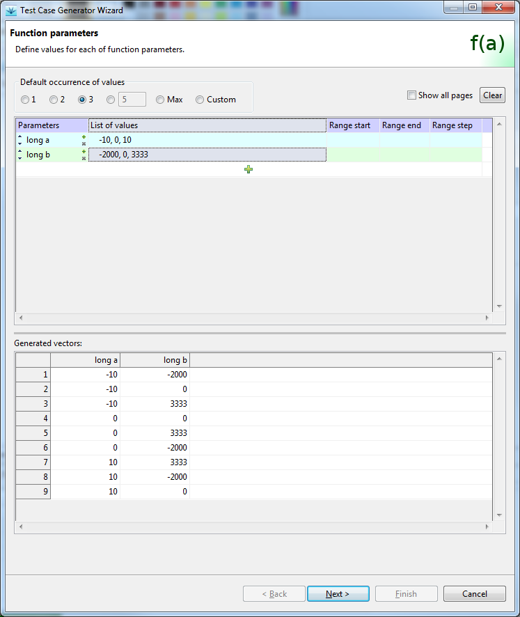
On each of wizard's input pages we can specify set of input values for each group of identifiers. The following groups of identifiers can be specified with the wizard: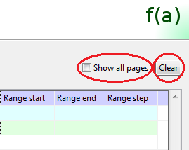
Persistence: Data in the wizard is persistent in one testIDEA session. This is useful, if we want to generate additional set of vectors with slightly changed input values. Wizard contents can be cleared at any time by pressing the Clear button on the first page (see image above).
Limitations:
Stubs: Only assignments of one step of one stub can
be modified with test case generator.
Test points: Only assignments of one step of one
test point can be modified with test case generator.
Wizard always creates a set of test cases as derived tests, so one test case must be selected before starting the wizard. This test case also serves as a template for the generated derived test cases. For this reason, definition of the base test case should be done before starting the wizard, which uses it in the following way:
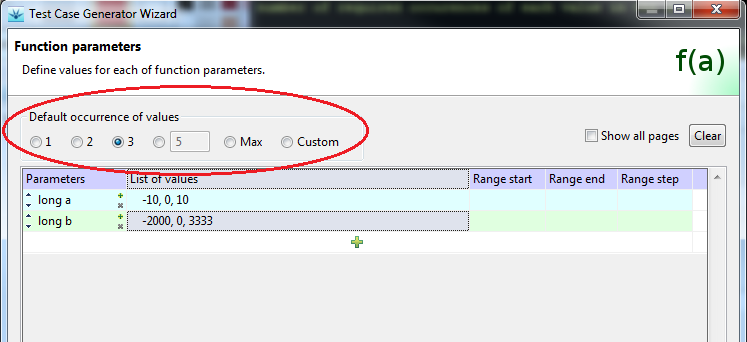
If some value should have the number of occurrences different from the default one, we have to select custom occurrence, and then define the number of occurrences for each identifier. If we select custom occurrence also for identifier, then we can define occurrence for each value of that identifier.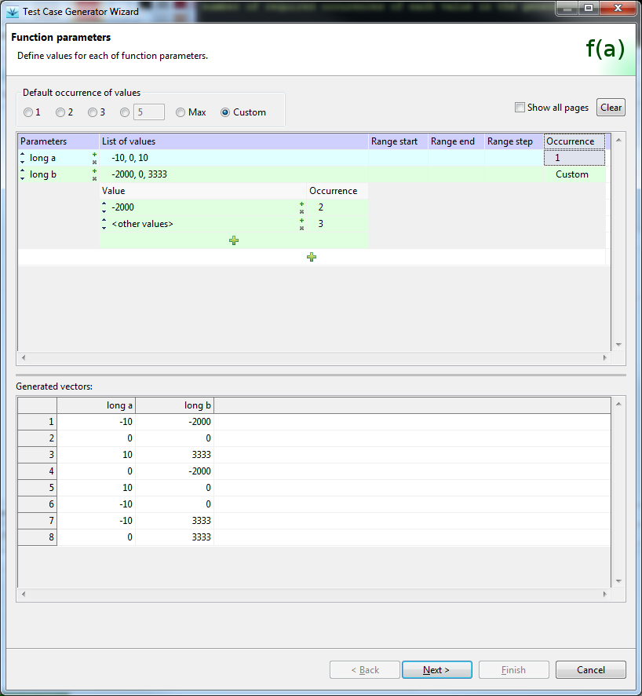
This number defines the minimum number of occurrences for the value in the set of generated test vectors. Depending on the occurrence setting for values in other identifiers, more vectors containing the value may be generated. For example, in the above image we can see, that values of the first parameter appear more than once, even if their occurrence is specified as 1, because this is the only way to satisfy the number of occurrences for values of parameter 2.Disclaimer: The generator uses algorithm, which tries to minimize the number of generated vectors, which satisfy the specified value occurrence conditions, but may not produce the best possible result always.
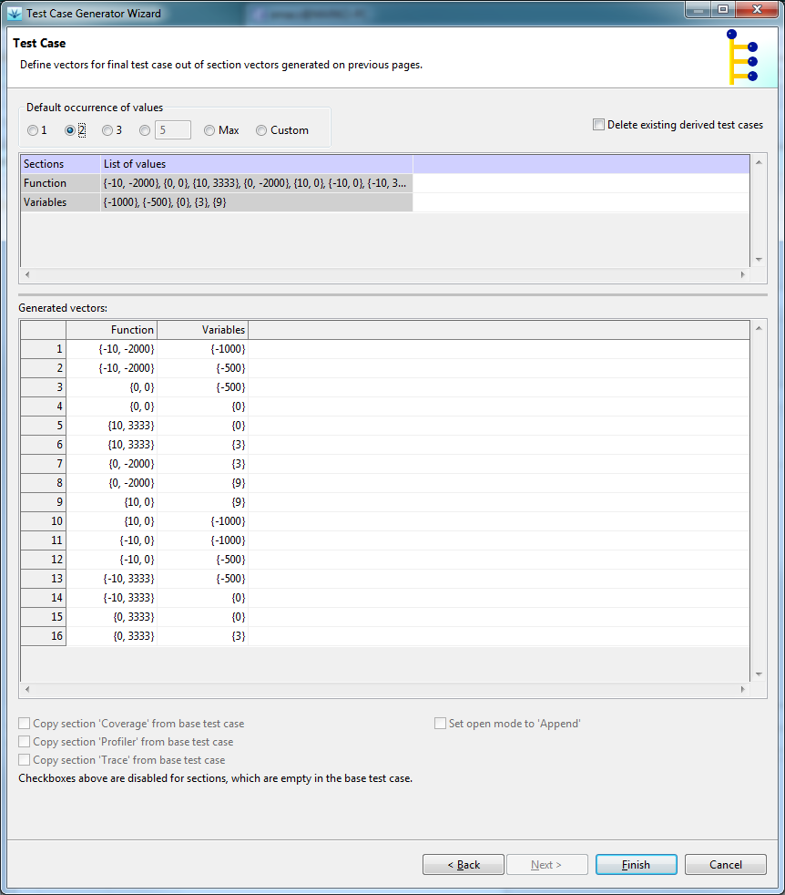
To be able to use dry run functionality, test cases must be designed properly. Namely, they should have section Dry run defined. This section contains assignments, which store target state immediately after the test execution, usually in host variables. This state is then copied to section Variables, and can therefore be used in next test runs.
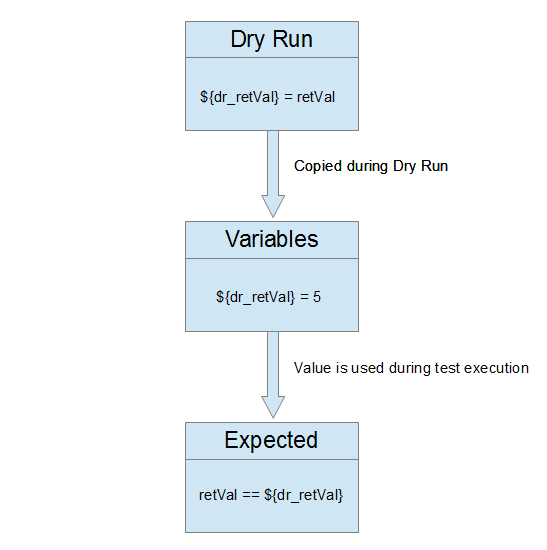
Example:Suppose we know that a function works correctly before modification, so it returns correct values. We want to remember these values and use them on next test runs. To accomplish this, we define the following assignment in dry run section:
${dr_expectedRetVal} | rv |
${dr_expectedRetVal} | 3 |
rv == ${dr_expectedRetVal}
function return value will be compared to value recorded during dry
run on next normal runs.
Coverage and profiler statistic values may also be updated on dry run if we decide so. Only values, which are already defined, are modified, while other values are left empty.
Important: Quality of test vectors is much more important than their quantity, so knowing of target code and good design is of crucial importance here. Human intelligence can not be replaced by generator.
Tip: Add a prefix to all host variables set in dry run section, to
make it clear that they are overwritten in Dry Run, for example
DRY_retVal, or dr_retVal.
void modifyStructT(struct_td *pStruct, int value);where:
struct struct_t {
int m_i;
float m_f;
char *m_pc;
int *m_pi;
float *m_pf;
double *m_pd;
};
typedef struct struct_t struct_td;
First we create base test case:
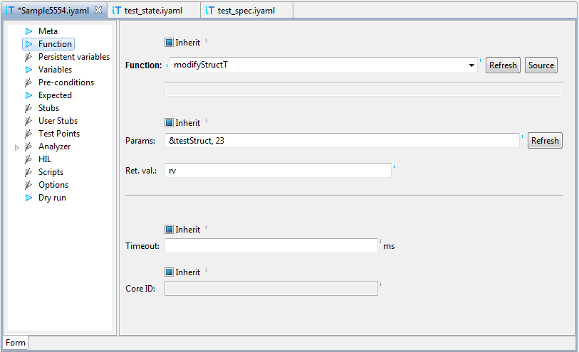
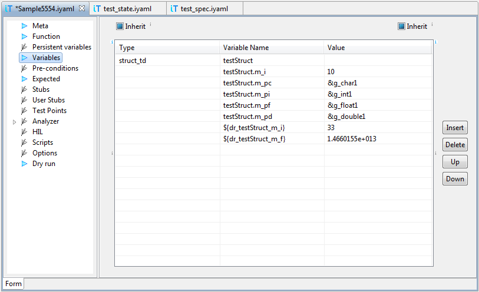
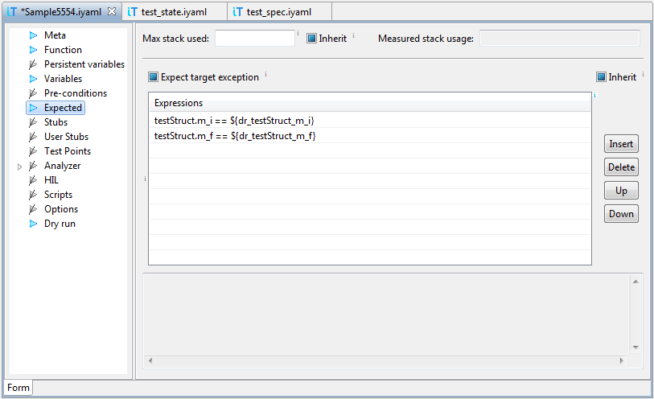
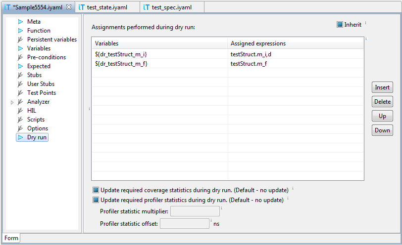
Then we start test case generator with commandiTools | Generate
Test Cases..., enter data and generate derived test cases:
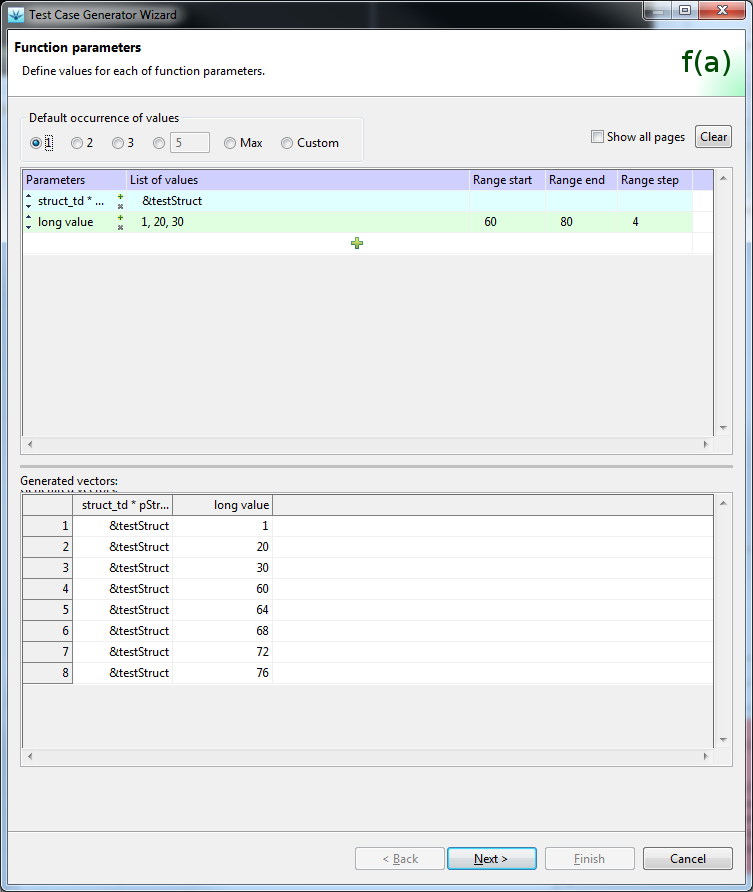
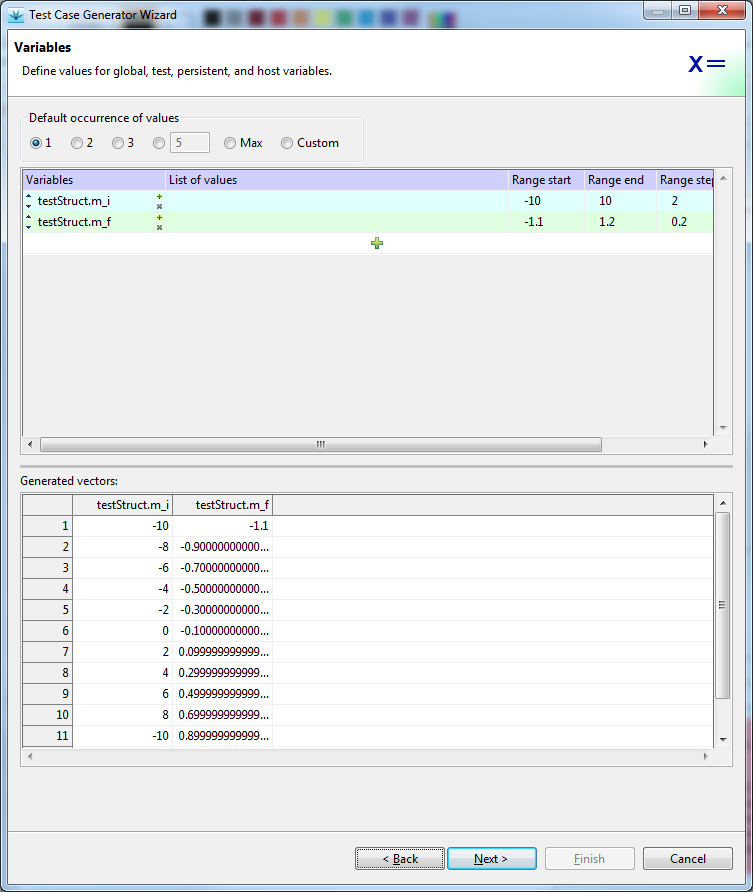
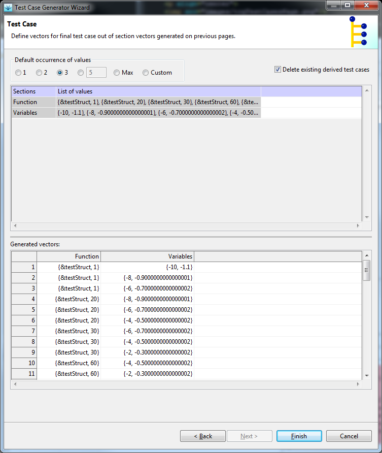
If we execute the generated test cases now, all will fail, because host variables, which are used in section Expected, are not defined in section Variables. We'll use dry run, to initialize these variable with proper values. Click the Dry Run tool-bar button to switch on Dry Run mode. Since this test execution mode modifies existing test cases, it is also marked with colored border of the Outline view: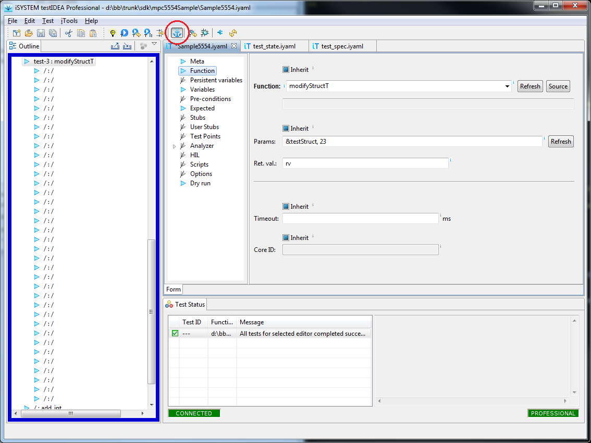
Then we select the base test case and commandTest | Run
Selected and Derived. Test cases execute, but all of them end
with error, because assignments in Dry run section are copied
to section Variables after test execution. To get successful
test execution, all we have to do is to switch off Dry Run mode
and rerun the tests.
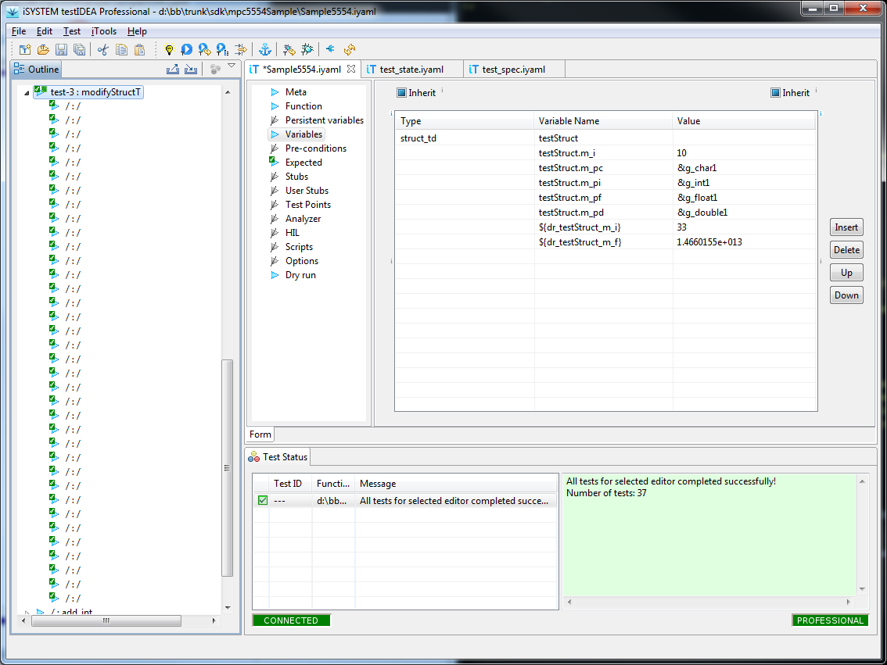